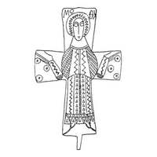

Catalog › CE-0263 · KOR2003-I.2.23
Valvă de față de encolpion cu Maica Domnului Orantă incizată și compoziție din trei cercuri pe capete
sec. X–XI (901–1100) · Țimleanskaia (Sarkel – Belaia Veja), regiunea Rostov, Rusia · Ermitajul de Stat (GE), Sankt Petersburg, secția de arheologie a Europei de Est și Siberiei (OAVEC), inv. кол. 2794, № 560
single valve of a reliquary cross, aramă; c. X–XI (901–1100); found at Țimleanskaia (Sarkel – Belaia Veja), regiunea Rostov, Rusia; kept at Ermitajul de Stat (GE), Sankt Petersburg, secția de arheologie a Europei de Est și Siberiei (OAVEC).


Identificare
- Categorie
- Valvă izolată
- Material
- Aramă
- Tehnică
- Turnare în relief; Gravare (incizie)
- Dimensiuni
- Î 104 × L 63 mm
Iconografie
- Avers
- Maica Domnului Orantă
- Descriere avers
- Valvă de față de encolpion cu capete drepte, ușor lărgite (balamaua de sus pierdută), cu imaginea adâncită în picioare a Maicii Domnului Orantă, completată cu o compoziție din trei cercuri cu puncte în centru pe capetele laterale ale valvei și cu inscripția deasupra capului Maicii Domnului – МР ΘV. Suprafața interioară a valvei este netedă.
- Inscripții
- МР ΘV
- Limba
- Greacă
Datare și atribuire
- Datare
- sec. X–XI (901–1100)
- Centru
- Necunoscut
- Tipologie
- Korzukhina–Peskova 2003, tip I 2
Descoperire
- Localitate
- Țimleanskaia (Sarkel – Belaia Veja)
- Regiune
- regiunea Rostov
- Țară
- Rusia
- Context
- Fortificație
- Anul
- 1950
Păstrare și referințe
- Colecție
- Ermitajul de Stat (GE), Sankt Petersburg, secția de arheologie a Europei de Est și Siberiei (OAVEC)
- Nr. inventar
- кол. 2794, № 560
- Bibliografie
- G. F. Korzukhina, A. A. Peskova, Древнерусские энколпионы. Нагрудные кресты-реликварии XI–XIII вв., Sankt-Petersburg, 2003 [Korzukhina–Peskova 2003], p. 57, cat. nr. I 2/23, reprodusă la Табл. 10 (planșe, p. 252). Bibliografie citată în sursă: Артамонов 1952, 59, 64, рис. 13; Куницький 1990, 109, рис. 1, 2; Корзухина, архив ф. 77, д. 14, л. 4.
- Figura
- Табл. 10
- Planșe
- Korzukhina–Peskova 2003, Табл. 10 (planșă fără paginație proprie în PDF; p. 252 tipărită)
- Observații
- Datare după Peskova: sec. X–XI. Circumstanțe: Săpături 1950 la așezarea fortificată Țimleanskoe de pe malul stâng, ale Expediției arheologice Volga–Don sub conducerea lui M. I. Artamonov. Coordonate: nu sunt date în sursă.
Citare: Corpus Encolpiorum, CE-0263, Valvă de față de encolpion cu Maica Domnului Orantă incizată și compoziție din trei cercuri pe capete, https://vitaliejosanu1979-ux.github.io/primul-meu-proiect/piese/KOR2003-I.2.23/ (accesat 2026-10-17).